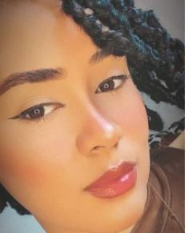

Datos Generales
Fecha de Nacimiento : 01/12/2003
Cedula : 402-4172714-4
Nacionalidad : Dominicana
Estado Civil : Soltera
Correo : kamil.limak733@gmail.com
Formacion Academica
Secundaria : Bachiller tecnico en informatica - Politecnico Virgen de la Altagracia .
Universitarios : Ing. Sistemas Computacionales (En curso)- Universidad Tecnologica de Santiago-UTESA
Experiencia Laboral
Soporte Tecnico - ARS FUTURO
Idiomas
Ingles - Medio
Espanol - Full
Pasatiempos
Trabajar y Estudiar
Dormir y Netflix
Peliculas Favoritas
COCO
ENRREDADOS
AMOR INQUEBRANTABLE
En 10 Years